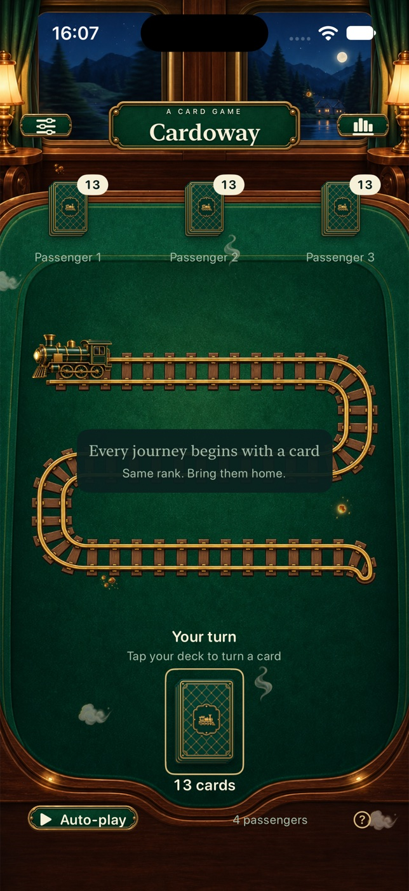

편안한 모드
같은 숫자의 카드를 자동으로 모아 매 턴의 차분한 흐름을 즐길 수 있습니다.
클래식 카드 한 벌 · 새로운 여행
Cardoway는 52장의 카드로 컴퓨터 상대 1~3명과 대결하는 싱글 플레이 게임입니다. 차례로 선로에 카드를 한 장씩 놓으세요. 새 카드와 같은 숫자의 카드가 앞에 있으면, 두 카드와 그 사이의 카드를 모두 내 카드 더미로 가져옵니다. 무늬는 상관없어요. 카드를 가져오면 한 번 더 낼 수 있고, 마지막까지 카드가 남은 사람이 이깁니다.

CARDOWAY
같은 숫자의 카드를 자동으로 모아 매 턴의 차분한 흐름을 즐길 수 있습니다.
먼저 놓인 같은 숫자의 카드를 직접 찾습니다. 주의 깊게 볼수록 여행이 더 재미있어집니다.
두 모드와 기본 테마 하나가 포함되어 있습니다. 추가 테마 네 가지와 각 테마의 효과는 미리 살펴본 뒤 한 번의 선택 구매로 모두 잠금 해제할 수 있습니다. 구독은 없습니다.
PRIVACY
설정, 플레이 모드, 테마 선택과 기록된 전적은 기기에 저장되며 개발자에게 전송되지 않습니다. 진행 중인 판은 저장되지 않습니다. 앱을 삭제하면 앱의 로컬 설정과 전적도 삭제됩니다.
개인정보 처리방침 보기